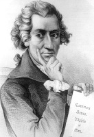

Thomas Paine (1737-1809) radikal bir bildiri yazarı ve 1776’daki ünlü kitabı Sağduyu’yla İngiliz hâkimiyetine karşı devrime katılmaları için birçok Amerikalı’yı ikna eden siyaset düşünürüydü. Paine İngiliz kraliyetini küçümsedi ve cumhuriyetçiliğin en iyi hükümet biçimi olduğuna inandı. Paine bütün hayatı boyunca despotik hükümetlere karşı devrimci amaçlar kuşanmış bir kışkırtıcı ve propagandacı oldu. Gerçek bir dünya vatandaşı olan Paine, Fransız Devrimi’nde de yer aldı ve Kral XVI. Louis’yi indiren devrimi savunan İnsan Hakları isimli coşkulu bir kitap daha yazdı.
Paine’in destekçilerini dışlama gibi bir huyu vardı ve yaşamı boyunca çabaları çok az takdir gördü. Fransa’ya hareket ettikten sonra, kendisinden beklenmeyen bir şekilde, görevden alınan kralın idamına karşı çıktı. Paine hemen sonrasında kendisinin desteklediği devrim hükümeti tarafından yakalandı ve ölüme mahkûm edildi. Paine inanılmaz bir şans eseri, celladının tebeşirle hapishanedeki kapısının üzerine kellesinin uçurulacağı anlamına gelen işareti çizmeyi unutmasıyla, giyotinden kurtuldu. Paine nihayetinde geleneğe uymayan dinî inançlarının (İncil’i ‘şahane bir uydurma’ olarak niteliyordu) onu toplum dışına itmesiyle Amerika’ya geri döndü. Yoksulluk içinde öldü.
Paine’in yazım tarzı tavizsiz, kışkırtıcı ve ilham vericiydi. Sağduyu’da III. George’u “kraliyet hayvanı” ve kraliyeti ise “şeytan” olarak adlandırdı. Paine Amerika’daki cumhuriyetçi hükümet şeklinin dünyada acı çeken diğer insanlara ilham kaynağı olacağına inandı. “Amerika’nın ülküsü geniş anlamda tüm insanlığın ülküsüdür” diye yazdı. Paine’nin yorulmak bilmez propaganda çabaları onu eleştirenlerden bile saygı gördü. Paine’e zamanında “domuz ile köpek yavrusu kırması” diyen Amerika Birleşik Devletleri’nin ikinci başkanı John Adams bile “Paine’in kalemi olmaksızın Washington’un kılıcı boşa sallanmış olurdu” diyerek, Paine’e hakkını teslim etti.
EK BİLGİLER:
1. Ölümünden on yıl sonra Paine’in iskeleti, onu İngiltere’de tekrar gömmek isteyen bir İngiliz hayranı tarafından mezardan çıkarıldı. Tekrar gömme hiçbir zaman gerçekleşmedi ve Paine’nin kemiklerine ne olduğu konusu bir sır olarak kaldı.
2. Paine Fransız Devrimi’nden dehşete kapılmış muhafazakâr bir İngiliz hukukçu olan Edmund Burke’e cevaben “İnsan Hakları”nı yazdı. Paine Fransız köylülerinin içler acısı şartlarının devrimi haklı çıkardığını savundu ve Burke’ün silahlı ayaklanmanın yerine ılımlı, artan reformlara yönelik çağrısını küçümsedi.
3. Paine on üç koloninin tamamı için “Amerika Birleşik Devletleri” ismini öneren kişi olmasıyla da tanınır.